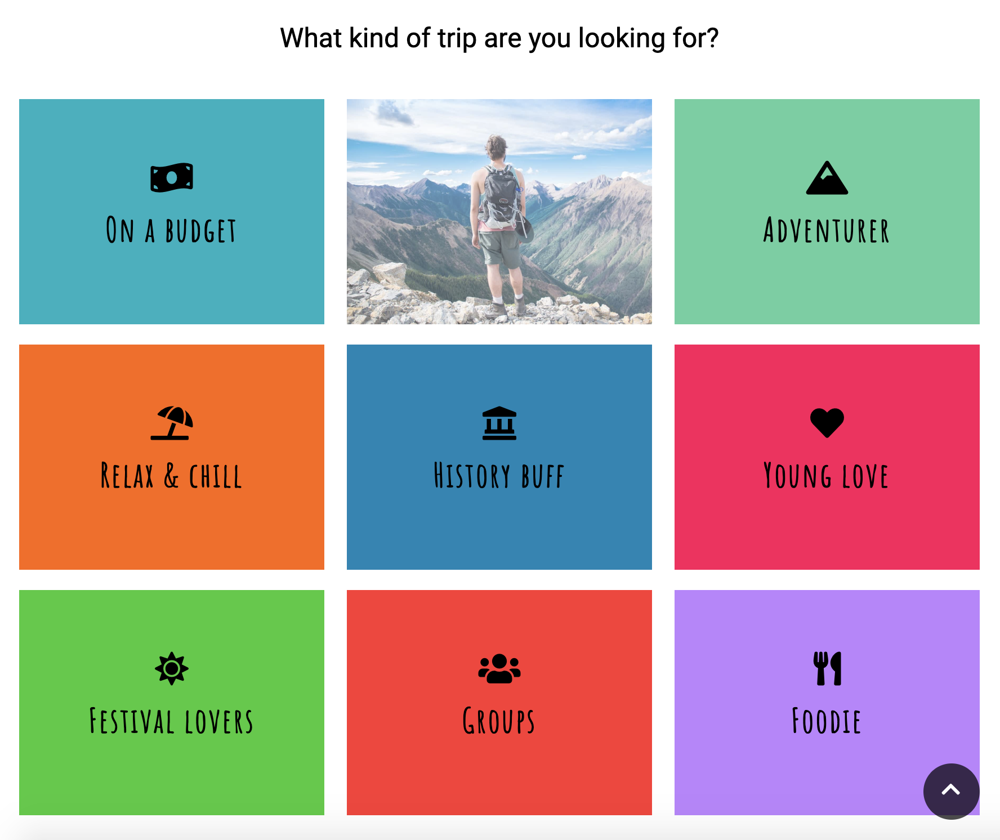
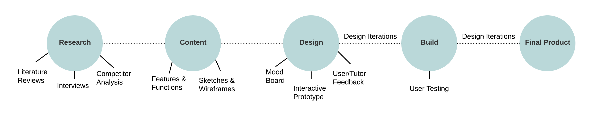
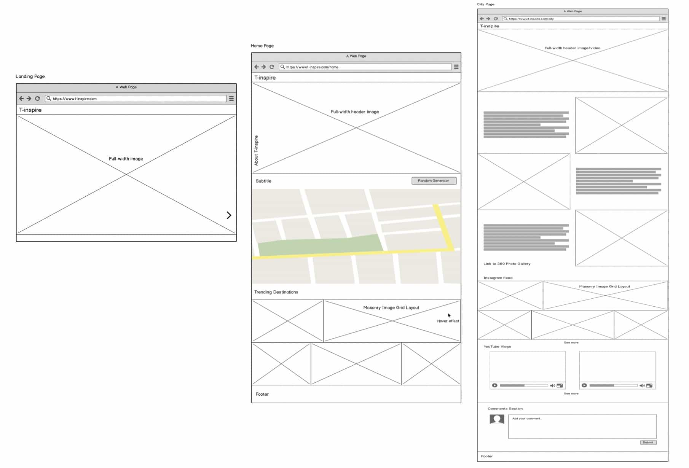

About the project
Cityscape 360 is a city travel inspiration website for teenagers and students. It displays embedded VR content built using A-Frame, a virtual reality framework, as well as an interactive map built using LeafletJS providing navigation to city pages, and embedded Instagram feeds. The website was built using HTML, CSS Grid, CSS Flexbox, and JavaScript, and is a prototype demonstrating one city, i.e. Bristol, to illustrate what the rest of the website could look like if further developed in the future.
Why?
This is an individual project created in my final year of studying BSc Digital Media. I wanted to focus on front-end design and development and the project followed a user-centred approach. It aims to inspire young people to travel more or to start their travelling adventures through being attractive, user-focused, and providing reliable content.
Research
Both primary and secondary research was carried out through interviews with people between the ages of 18-24; competitor analysis of similar existing applications; and literature reviews on the travel industry. I looked into how social media and technology is impacting on travel to investigate how having access to instant, real-time information online is changing how we approach planning a trip. Studies suggested that VR and AR technologies are going to continue to transform the travel industry and are being used at every step of the travel experience. Although it has become easier to create 360° content in recent years, it isn't often seen on websites. Therefore, Cityscape has the opportunity to stand out from its competitors and create a lasting experience for the audience.
Process
 After initial research, a list of features and functions were put together and sketches and wireframes were then produced using Balsamiq software (above). A mood board was created using Adobe InDesign with ideas for colour schemes, fonts, and layout. This resulted in a high-fidelity interactive prototype put together using InVision which was tested with users. Feedback from users led to iterating the design to implement improvements before the website was built. User testing was also carried out at the end of build to observe interactions and gather feedback for future improvements.
The website is best viewed on Google Chrome. To see a walkthrough of the project, I have put together a short video.